Note
This page has been moved to <https://matplotlib.org/mpl-third-party/>, where you will find an up-to-date list of packages.
Third party packages¶
Several external packages that extend or build on Matplotlib functionality are listed below. You can find more packages at PyPI. They are maintained and distributed separately from Matplotlib, and thus need to be installed individually.
If you have a created a package that extends or builds on Matplotlib
and would like to have your package listed on this page, please submit
an issue or pull request on GitHub. The pull request should include a short
description of the library and an image demonstrating the functionality.
To be included in the PyPI listing, please include Framework :: Matplotlib
in the classifier list in the setup.py file for your package. We are also
happy to host third party packages within the Matplotlib GitHub Organization.
Mapping toolkits¶
Basemap¶
Basemap plots data on map projections, with continental and political boundaries.
{kind=link}
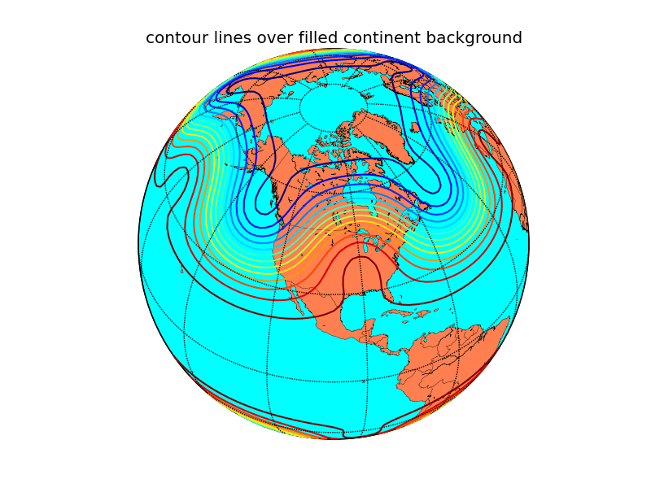
Cartopy¶
Cartopy builds on top of Matplotlib to provide object oriented map projection definitions and close integration with Shapely for powerful yet easy-to-use vector data processing tools. An example plot from the Cartopy gallery:
{kind=link}
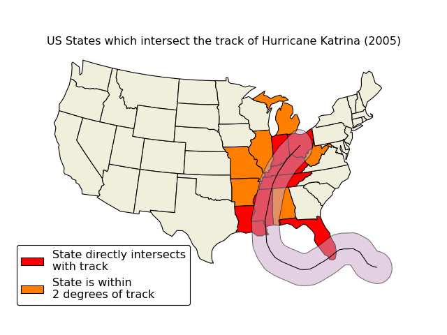
Geoplot¶
Geoplot builds on top of Matplotlib and Cartopy to provide a "standard library" of simple, powerful, and customizable plot types. An example plot from the Geoplot gallery:
{kind=link}
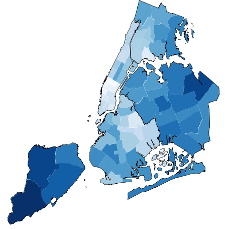
Ridge Map¶
ridge_map uses Matplotlib, SRTM.py, NumPy, and scikit-image to make ridge plots of your favorite ridges.
{kind=link}
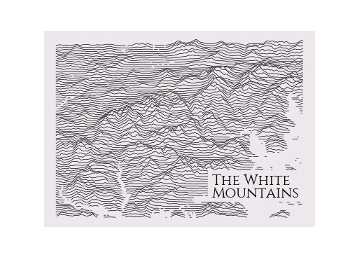
Declarative libraries¶
{kind=link}
holoviews¶
holoviews makes it easier to visualize data interactively, especially in a Jupyter notebook, by providing a set of declarative plotting objects that store your data and associated metadata. Your data is then immediately visualizable alongside or overlaid with other data, either statically or with automatically provided widgets for parameter exploration.
{kind=link}
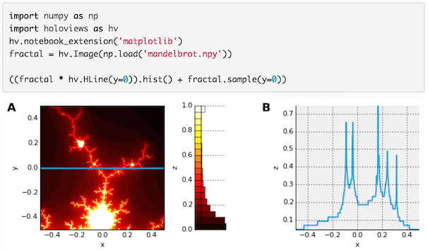
Specialty plots¶
Broken Axes¶
brokenaxes supplies an axes class that can have a visual break to indicate a discontinuous range.
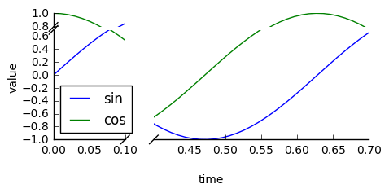
DeCiDa¶
DeCiDa is a library of functions and classes for electron device characterization, electronic circuit design and general data visualization and analysis.
matplotlib-scalebar¶
matplotlib-scalebar provides a new artist to display a scale bar, aka micron bar.
It is particularly useful when displaying calibrated images plotted using plt.imshow(...).
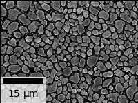
Matplotlib-Venn¶
Matplotlib-Venn provides a set of functions for plotting 2- and 3-set area-weighted (or unweighted) Venn diagrams.
mpl-probscale¶
mpl-probscale is a small extension
that allows Matplotlib users to specify probability scales. Simply importing the
probscale module registers the scale with Matplotlib, making it accessible
via e.g., ax.set_xscale('prob') or plt.yscale('prob').
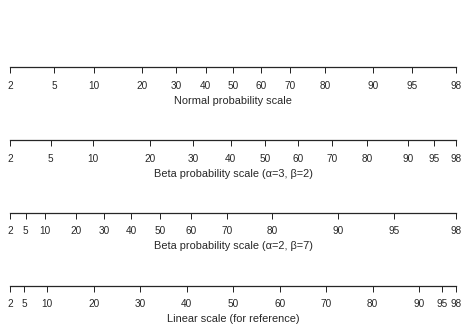
mpl-scatter-density¶
mpl-scatter-density is a small package that makes it easy to make scatter plots of large numbers of points using a density map. The following example contains around 13 million points and the plotting (excluding reading in the data) took less than a second on an average laptop:
{kind=link}
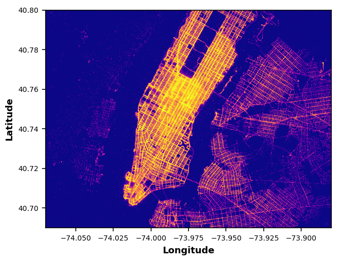
When used in interactive mode, the density map is downsampled on-the-fly while panning/zooming in order to provide a smooth interactive experience.
mplstereonet¶
mplstereonet provides stereonets for plotting and analyzing orientation data in Matplotlib.
Natgrid¶
mpl_toolkits.natgrid is an interface to the natgrid C library for gridding irregularly spaced data.
pyUpSet¶
pyUpSet is a static Python implementation of the UpSet suite by Lex et al. to explore complex intersections of sets and data frames.
seaborn¶
seaborn is a high level interface for drawing statistical graphics with Matplotlib. It aims to make visualization a central part of exploring and understanding complex datasets.
{kind=link}
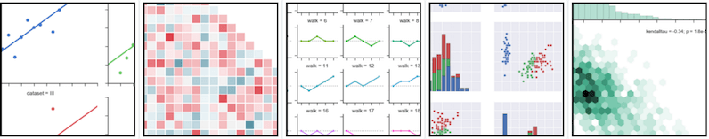
WCSAxes¶
The Astropy core package includes a submodule called WCSAxes (available at astropy.visualization.wcsaxes) which adds Matplotlib projections for Astronomical image data. The following is an example of a plot made with WCSAxes which includes the original coordinate system of the image and an overlay of a different coordinate system:
{kind=link}
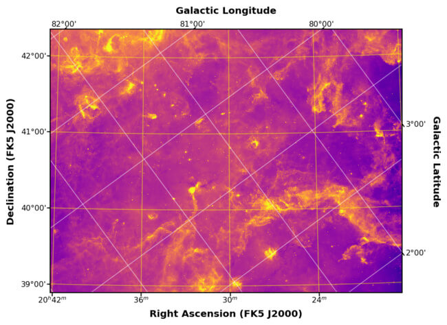
Windrose¶
Windrose is a Python Matplotlib, Numpy library to manage wind data, draw windroses (also known as polar rose plots), draw probability density functions and fit Weibull distributions.
Yellowbrick¶
Yellowbrick is a suite of visual diagnostic tools for machine learning that enables human steering of the model selection process. Yellowbrick combines scikit-learn with matplotlib using an estimator-based API called the Visualizer, which wraps both sklearn models and matplotlib Axes. Visualizer objects fit neatly into the machine learning workflow allowing data scientists to integrate visual diagnostic and model interpretation tools into experimentation without extra steps.
{kind=link}
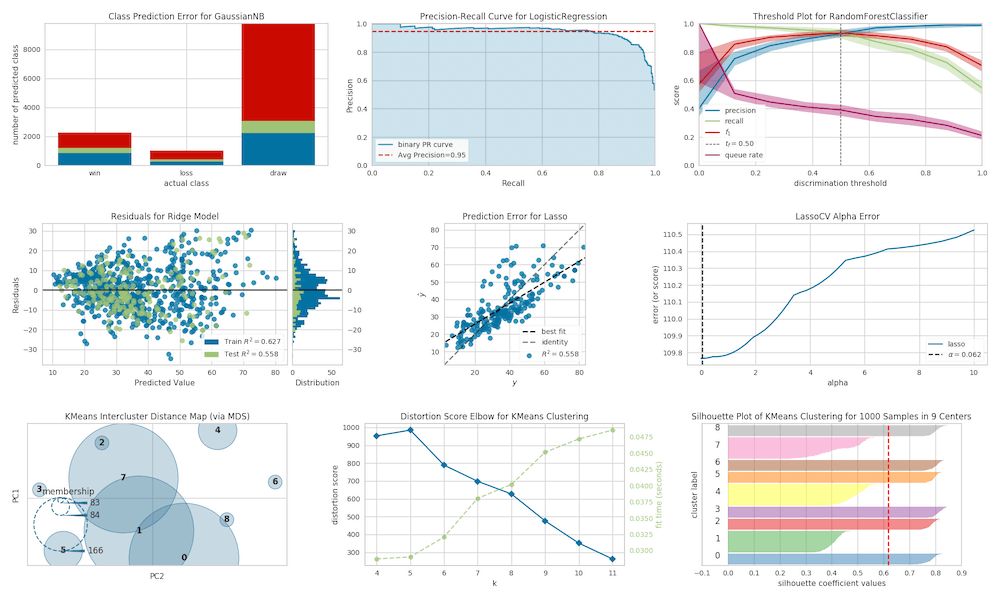
Animations¶
animatplot¶
animatplot is a library for producing interactive animated plots with the goal of making production of animated plots almost as easy as static ones.
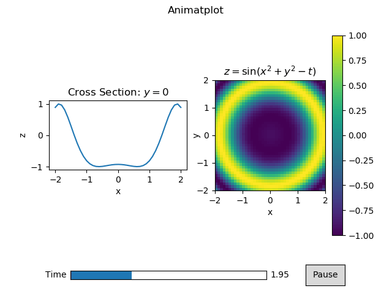
For an animated version of the above picture and more examples, see the animatplot gallery.
numpngw¶
numpngw provides functions for writing
NumPy arrays to PNG and animated PNG files. It also includes the class
AnimatedPNGWriter that can be used to save a Matplotlib animation as an
animated PNG file. See the example on the PyPI page or at the numpngw
github repository.
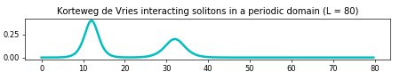
Interactivity¶
mplcursors¶
mplcursors provides interactive data cursors for Matplotlib.
MplDataCursor¶
MplDataCursor is a toolkit written by Joe Kington to provide interactive "data cursors" (clickable annotation boxes) for Matplotlib.
mpl_interactions¶
mpl_interactions makes it easy to create interactive plots controlled by sliders and other widgets. It also provides several handy capabilities such as manual image segmentation, comparing cross-sections of arrays, and using the scroll wheel to zoom.
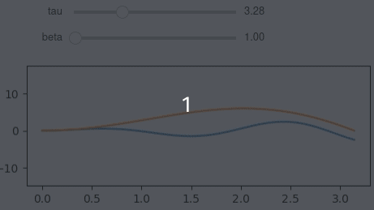
Rendering backends¶
GUI integration¶
Miscellaneous¶
adjustText¶
adjustText is a small library for automatically adjusting text position in Matplotlib plots to minimize overlaps between them, specified points and other objects.
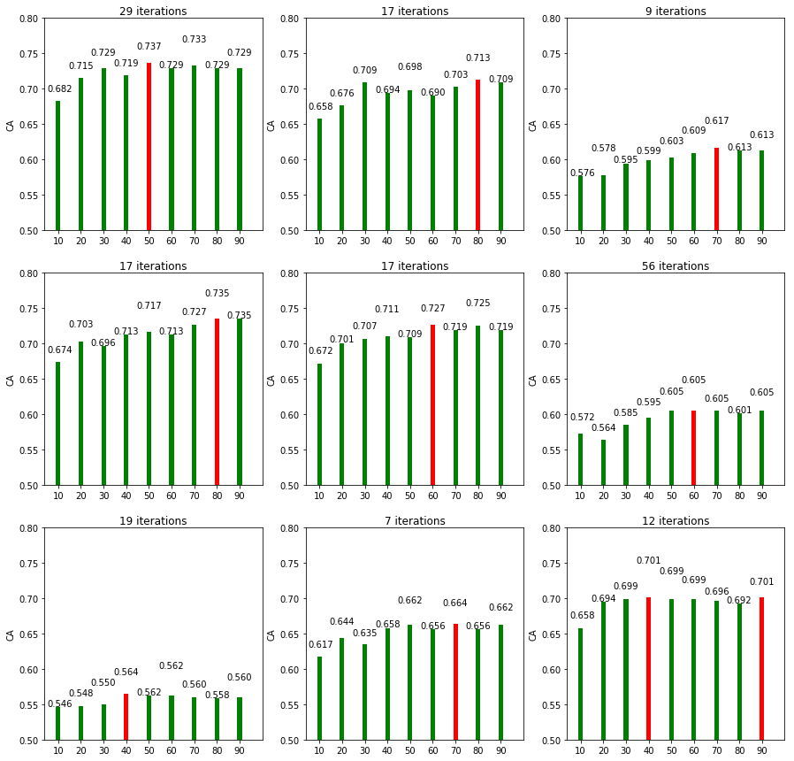
iTerm2 terminal backend¶
matplotlib_iterm2 is an external Matplotlib backend using the iTerm2 nightly build inline image display feature.
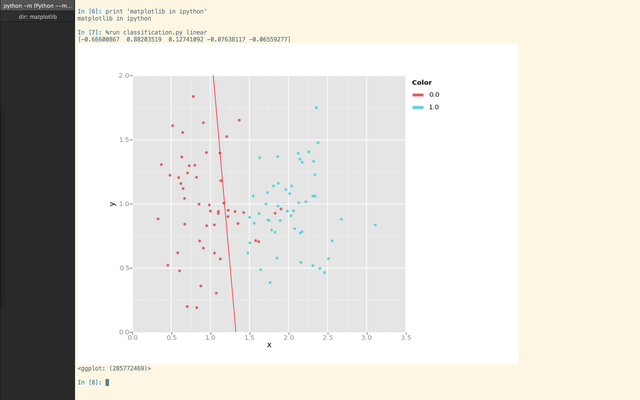
mpl-template¶
mpl-template provides a customizable way to add engineering figure elements such as a title block, border, and logo.
{kind=link}
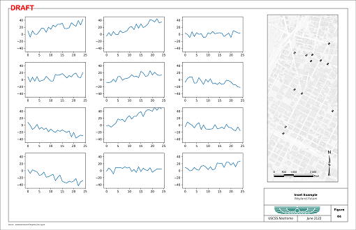
figpager¶
figpager provides customizable figure elements such as text, lines and images and subplot layout control for single or multi page output.
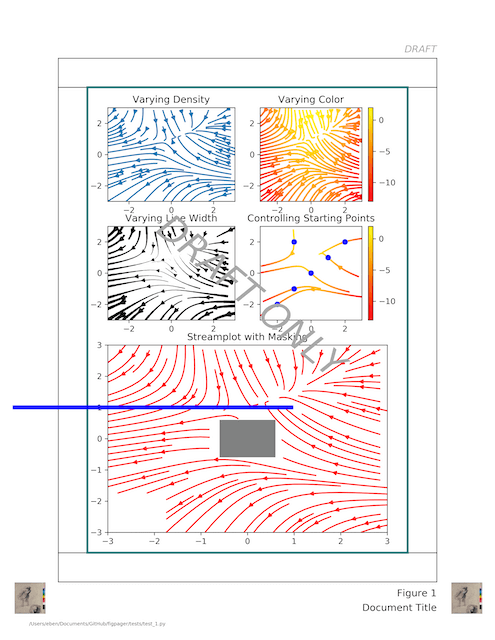
blume¶
blume provides a replacement for
the Matplotlib table module. It fixes a number of issues with the
existing table. See the blume github repository for more details.
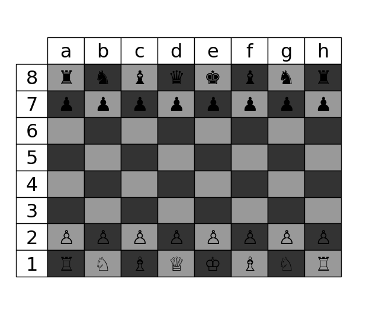
highlight-text¶
highlight-text is a small library that provides an easy way to effectively annotate plots by highlighting substrings with the font properties of your choice. See the highlight-text github repository for more details and examples.
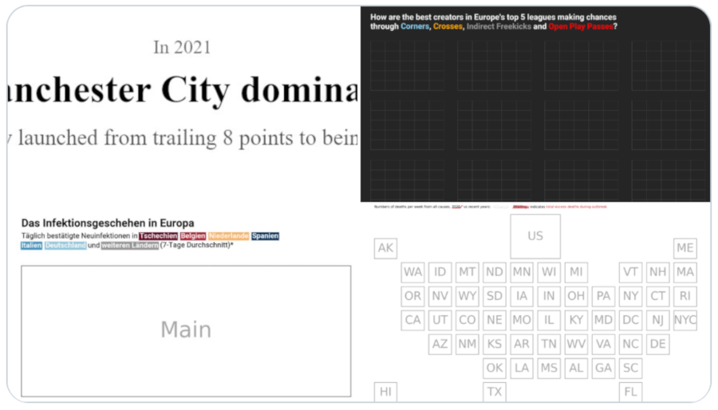
DNA Features Viewer¶
DNA Features Viewer provides methods to plot annotated DNA sequence maps (possibly along other Matplotlib plots) for Bioinformatics and Synthetic Biology applications.
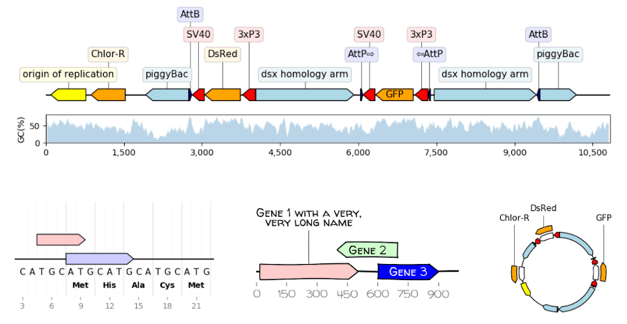
GUI applications¶
sviewgui¶
sviewgui is a PyQt-based GUI for
visualisation of data from csv files or pandas.DataFrames. Main features:
Scatter, line, density, histogram, and box plot types
Settings for the marker size, line width, number of bins of histogram, colormap (from cmocean)
Save figure as editable PDF
Code of the plotted graph is available so that it can be reused and modified outside of sviewgui
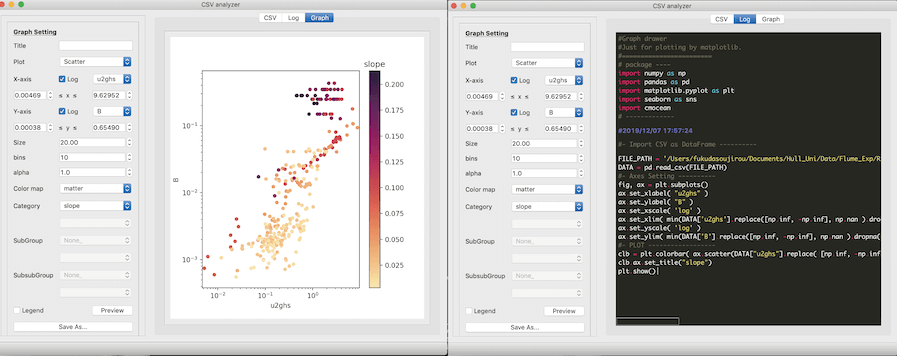